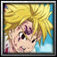
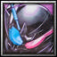

Season 1 archive · Go to active Season 2 →
← All playersPlayer profile
a3re
Rank #18server.eurobattle.netSeason 1
Most played · Dante スパーダの息子
Matches105 wins · 5 losses
Win rate50%
Avg K / D / A47.5 / 35.0 / 9.8
Avg APM143
Avg damage dealt280.3k
Avg damage taken147.3k
Heroes played
Explore heroes →| HERO | MATCHES | WIN RATE | AVG K / D / A | AVG DMG |
|---|---|---|---|---|
Dante スパーダの息子Most played | 2 | 50% | 54.5 / 35.0 / 12.5 | 317.7k |
Lucia | 1 | 100% | 60.0 / 26.0 / 8.0 | 308.3k |
 Meliodas | 1 | 0% | 37.0 / 38.0 / 7.0 | 237.0k |
沢田 綱吉 | 1 | 0% | 62.0 / 37.0 / 6.0 | 380.5k |
『黑』 | 1 | 0% | 58.0 / 41.0 / 11.0 | 319.5k |
Ragna | 1 | 0% | 43.0 / 45.0 / 11.0 | 309.6k |
Kiana Kaslana | 1 | 0% | 69.0 / 34.0 / 14.0 | 384.9k |
Majin Alter | 1 | 0% | 30.0 / 33.0 / 7.0 | 197.7k |
 Kiryuu Sento | 1 | 0% | 7.0 / 26.0 / 9.0 | 29.9k |
Averages use recorded statistics only; unavailable historical values are shown as —.
Recent matches
Open a match for its scoreboard and kill matchups.
LOSS70:35
MCB #2000142
10 Oct 2026 · 18:16 WIB
60.0 / 39.0 / 14.0View match →
LOSS67:37
MCB #2000136
08 Oct 2026 · 00:32 WIB
37.0 / 38.0 / 7.0View match →
LOSS62:27
MCB #2000111
04 Oct 2026 · 13:49 WIB
62.0 / 37.0 / 6.0View match →
LOSS64:54
MCB #2000106
03 Oct 2026 · 19:13 WIB
58.0 / 41.0 / 11.0View match →
LOSS61:32
MCB #1000056
02 Oct 2026 · 23:31 WIB
43.0 / 45.0 / 11.0View match →
LOSS60:58
MCB #2000104
02 Oct 2026 · 22:03 WIB
69.0 / 34.0 / 14.0View match →
WIN60:18
MCB #2000103
02 Oct 2026 · 20:55 WIB
60.0 / 26.0 / 8.0View match →
WIN58:04
MCB #2000102
01 Oct 2026 · 19:57 WIB
49.0 / 31.0 / 11.0View match →
LOSS60:16
MCB #2000101
01 Oct 2026 · 00:05 WIB
30.0 / 33.0 / 7.0View match →
LOSS68:14
MCB #2000031
03 Sep 2026 · 00:36 WIB
7.0 / 26.0 / 9.0View match →